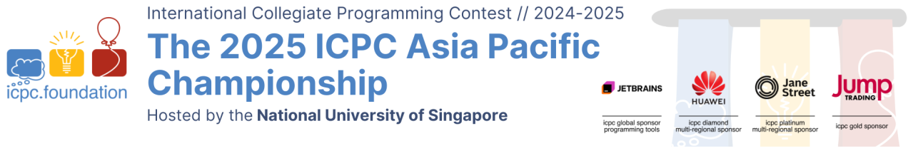

Problem Analysis
The 2025 ICPC Asia Pacific Championship
This is an analysis of some possible ways to solve the problems of The 2025 ICPC Asia Pacific Championship. Since the purpose of this analysis is mainly to give the general idea to solve each problem, we left several (implementation) details in the discussion for reader’s exercise. If some of the terminology or algorithms mentioned below are not familiar to you, your favorite search engine should be able to help. If you find an error, please send an e-mail to icpc-apac-judges@googlegroups.com about it.
| Problem Title | Problem Author | Analysis Author | |
|---|---|---|---|
| A | Control Towers | Ammar Fathin Sabili | Ammar Fathin Sabili |
| B | Three-Dimensional Embedding | Mitsuru Kusumoto | Mitsuru Kusumoto |
| C | Cactus Connectivity | Meng-Tsung Tsai | Jonathan Irvin Gunawan |
| D | Tower of Hanoi | Kai-Chun Ho | Shogo Murai |
| E | Minus Operator | Mitsuru Kusumoto | Mitsuru Kusumoto |
| F | Hold the Star | Fausta Anugrah Dianparama, Pikatan Arya Bramajati, Julian Fernando | Pikatan Arya Bramajati |
| G | Corrupted File | Pikatan Arya Bramajati | Pikatan Arya Bramajati, Nguyen Thanh Trung |
| H | Secret Lilies and Roses | Ammar Fathin Sabili | Ammar Fathin Sabili |
| I | Squares on Grid Lines | Pikatan Arya Bramajati | Pikatan Arya Bramajati |
| J | Gathering Sharks | Pikatan Arya Bramajati | Pikatan Arya Bramajati |
| K | Book Sorting | Brian Tsai, Bo-Wei Lin, Kuan-Lin Chen | Shogo Murai |
| L | Boarding Queue | Alham Fikri Aji | Jonathan Irvin Gunawan |
| M | Can You Reach There? | Kwee Lung Sin | Kwee Lung Sin, Nguyen Thanh Trung |
The contest judges would also like to thank the following for their valuable feedback to the tasks: Bui Hong Duc, Masaki Nishimoto, Prof. Takashi Chikayama, Rama Aryasuta Pangestu, Riku Kawasaki, Vu Hoang Kien, William Gan, and Yui Hosaka.